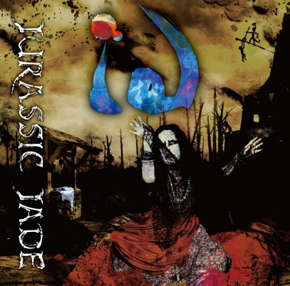

| 1. ないことあること [Addicted to the Likes] Music by NOB, WATANABE, HAYA, HIZUMI Lyrics: HIZUMI Spec zero, Anonymous, Winner takes all どうでもいいこと 感動してみる 目立ちたい 褒められたい 見せびらかしたい ないこと 付け足し あることにする 目立ちたい 褒められたい 見せびらかしたい いいね！ いいね！ いいね！ いいね！ いいね！ いいね！ いいね！ いいね！ いいね！ いいね！ いいね！ いいね！ Retweet Dema Retweet I found out, I found out, I found out Is it what you found? 酷いできごとを見つけてしまった 目立ちたい 褒められたい 見せびらかしたい ないこと 付け足し できごとにする 叩きたい おとしめたい 負けたくない 顔なし 自惚れ fum fum fum... 切り捨て 繰り上げ fum fum fum... 想像してごらん… |
|
2. P K |
| 3. Cold Sleeps Music by NOB, WATANABE, HAYA, HIZUMI Lyrics: HIZUMI 古井戸 三日月 みな底 堕ちて 手向けし 供花に 水はなし せんりょう はかって 十万遍 まんりょう 咲かせてくださいな 嘘ついたら 手のひら 帷子 片袖 堕ちて 授けし 鋼 仇をなし せんりょう はかって 十万年 七代先まで 祟ります 嘘ついたら まだ見ぬ吾子よ 赤子らよ まだ見ぬ吾子よ 赤子らよ まだ見ぬ吾子よ 赤子らよ Take your turn Take your turn Take your turn It’s your turn Now the time |
| 4. はじめてのLove Song [Love Song of My Darkside] Music by NOB, WATANABE, HAYA, HIZUMI Lyrics: HIZUMI I’m not a side show in your life, I’m not a part of you I’m not a part of your side show I’m not a side show in your life, I’m not a part of you Ain’t no, Ain’t no, Ain’t no, Ain’t no Wake me up before you die 罵ることから始まった子守唄 生まれて初めて聴いたLove Song 怖くて全然眠れないんだ 明け方まで続いてるLove Song 悪い夢なら醒めるでしょう 醒めない夢を見てるのでしょう 固まる朝 何事もなく 忘れたふりして起きるのでしょう でもよみがえる ぎゅっと目を閉じ 両手で耳を塞いでみても 罵る言葉で始まった子守唄 ずいぶん昔に聴いたLove Song ラッコの毛皮が来ないんだ いまわのきわにも聴こえてるLove Song 見えないものだけ欲しいんだ 見たことないから手に入れたい いつかはママが笑ってくれる 本当のママが帰ってくるの 心の奥にしまってあるよ 両手で自分を抱きしめてみる |
| 5. ようこそDear Girl [Yohko, Get Away] Music by NOB, WATANABE, HAYA, HIZUMI Lyrics: HIZUMI Dear girl, Pretty girl, You’re my sunshine Wipe your tears away, Smile on your mind 私がどこから来たのか 神様は教えてくれない それでもどうか逃げて生き延びてと あの人は言った 力の限り 夜鷹 空飛んだ 星になるまで あの橋渡ればDMZ※ 夢に見た自由世界 ここまでおいで 雨あられと降るナパームデス 花咲く夜空 Yohko ようこそ ここまでおいで 着の身着のまま 素足で駆けて Yohko ようこそ 火の海越えて 大事なことは 小さな声で そっと呟く 小さな 小さな 小さな声で 呟いてみる 大事なことは 小さな声で そっと囁く いつかは いつかは いつかは きっと あまり深く愛していたから 憎むしかなかった せめてひとつ 傷でもつけて 確かめたかった 大事なことは 小さな声で そっと呟く 小さな 小さな 小さな声で 呟いてみる 大事なことは 小さな声で そっと囁く 最後の 最後の 最後に きっと あまり深く突き刺したから 引き返せなかった あともうひとつ 印をつけて 振り向かせたかった ※DeMilitarized Zone |
| 6. Never Child Mother Land Music by NOB, WATANABE, HAYA, HIZUMI Lyrics: HIZUMI I, Bias, Bloom in black, I, Bias I became to never child ひと口食べてよ 毒りんご そんなに急いでどこ行くの ベテルギウスは死にかけている 地球のはらわた 煮えくり返って 明ルイ未来が炎上している 生まれる前から嫌われてたから 居場所がどこにも見つからない Let’s get together Let’s get together Go back to the place once you belong I, Virus, Bloom in black, I, Virus I belonged to mother land ひと口食べたよ 毒りんご そんなに慌ててどこ行くの 足並み揃うと 絶滅するよ 地球のはらわた 煮えくり返って 世界ノヲワリを拡散している 生まれてすぐ見捨てられたけれど カラスが鳴いたら帰りたい Starting from now, Starting from here さあ 今から始まるのでしょう ここから始めるところでしょう もうすぐ着くね |
| 7. 黒く塗られた [Painted Black] Music by NOB, WATANABE, HAYA, HIZUMI Lyrics: HIZUMI 立ったまま死んでいけ 生きて恥をさらすなと 大人たちに教わった 黒く塗られた 誰に理解されたいのでなく 私はただ知りたいのだ もっともっと知りたいのだ 口移しで あなたたちに伝えたい 「其ノ光ヲ匿ス」のだ しゃべってはいけないと 大人たちに従った 黒く塗られた 誰に理解されたいのでなく 私はただ死んでいく 肉体は朽ちていく 叶うならば あなたたちに伝えたい 私達は神の仔だ ひるんではいけないと 大人たちに教わった 黒く塗られた 目を開けて 息をして 目を開けて 息をして 伝えてよ |
| 8. 遼かなるペシャワール [Diggers in Peshawar] Music by NOB, WATANABE, HAYA, HIZUMI Lyrics: HIZUM そうだ お前の足下を掘れ 深く そこに眠れる泉 呼び覚ませ そうだ お前の足下を掘れ 深く 血塗られた手を洗い 大地耕せ Sink a well, Sink a well, Sink a well, Plateau Sink a well, Sink a well, Sink a well, Sink a well We don’t survive without water Gimme shelter, Gimme water in refugee camp そうだ お前の頭上を仰げ 高く そこに輝く 南の星を目指せ そうだ お前の頭上を仰げ 高く そのメルクマール以て 前進せよ We don’t survive without water Gimme shelter, Gimme water in refugee camp I can’t survive without daughters We all stand by you to the last |
| 9. Cafe Baghdad Vice -Missing Link part2- Music by NOB, WATANABE, HAYA, HIZUMI Lyrics: HIZUM Promised land, Garbage dump, Mice, Vice 勇ましいプロパガンダ 正しい闘い Cafe Baghdadの狐 見たかい After the war, It’s brought light After the war, It’s brought light No cause 僕らは流される 僕らは慣らされる あの日が20に見えてくる Liquid coke, Fuel oil, Attraction’s Mice, Vice やましい唇ふさぐ 腫れもの 悩ましい指でつまむ 傷もの 藪の中 パパの思惑どおりだ メディアの世界じゃ 完全勝利だ パパの秘密は 地核に眠る 砂に埋もれた 恍惚の豚ども |
| 10. 晴れた夏の朝 -Missing Link part1- [Sunny Summer Morning as Usual] Music by NOB, WATANABE, HAYA, HIZUMI Lyrics: HIZUM Forget me not, Forget me not, Forget me not Forget me Don’t you remember me at all? Gimme a chance, Hurry up, Hurry up I wanna tell you my last story What’s happened? What’s happened? What? 晴れた夏の朝 光る風 海 花の名前 晴れた夏の朝 石畳 街 走る路面電車 いつもと同じ 晴れた夏の朝 ケイホウカイジョ All of , All of all has gone What would you like to see after the war, King Midas? What would you like to see after the war, Little boy and Fat man? Why did the captain name bomber his mother’s name? Build up the pleasure land, Full of desire, Take me to the higher Come on Messiah Hallelujah |
| 11. 22nd Hemiplegia Music by NOB, WATANABE, HAYA, GEORGE, JUNICHIRO, HIZUMI Lyrics: HIZUM Violence, Resistance さあ立ち上がれるか さらば 武器よ ドレスは血まみれか Online, License 交渉は五分五分か 焦げた十字路 煙 明日はどっちだ 陽の当たる場所に立って 飢えているか 病んでいるか 死んでいるか 生きているか 相対化する ヒーロー潰しは残酷だ All the systems of victims bring ‘em to the agony All the logics of Holo bleed it another side Running cold, Running sore 陽の差さぬ地下に入って 誰が敵で 誰が友で 信じるのか 疑うのか 相対化する アリバイ崩しは退屈だ The other side of hemisphere Sunny side of hemisphere Fame and wealth and powers are full People say that it overflows All the things were taken by force named justice |
| (C)BxTxH RECORDS 2020 |
| BACK TO |